직접 실행해 보기: verify 스킬
클로드 코드 팀에서는 코드의 약 90%를 Claude가 쓰고, 코드 리뷰도 AI(Artificial Intelligence)에게 맡겨요. 그러면 AI가 놓친 버그는 어떻게 잡을까요. 영상은 이 팀의 Addy Osmani가 공식 블로그에 공개한 글을 따라가며 그 방법을 풀어 줘요.
아래 화면이 그 원문이에요. 글쓴이 칸에 Addy Osmani, 날짜 칸에 2026년 11월 16일이 보여요. 부제는 E2E·속성 기반·차등 테스트로 에이전트가 증거를 갖고 검증하게 하는 법, 그리고 검증하는 쪽을 정직하게 유지하는 법을 다룬다고 적혀 있어요.
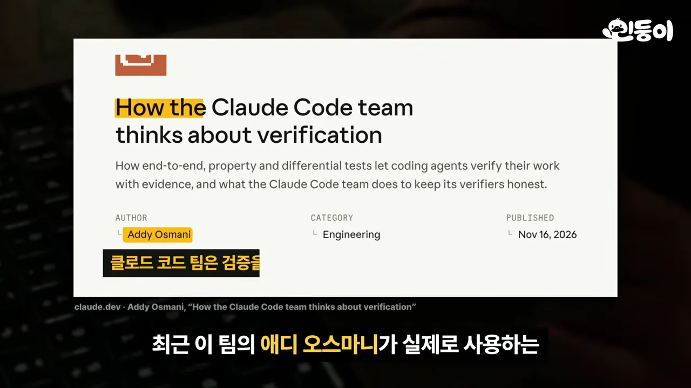
테스트보다 먼저, 직접 실행해 보기
이 팀이 가장 먼저 강조하는 건 Claude가 고친 앱을 직접 실행해 보는 거예요. 테스트보다 이게 더 중요하다고까지 말해요. 테스트가 통과했다고 끝내지 않고, 실제로 쓰는 환경에서도 기능이 돌아가는지 보는 거예요. 앱 종류마다 손에 쥐여 주는 도구가 달라요.
| 앱 종류 | Claude가 확인하는 방법 |
|---|---|
| 웹사이트 | Chrome 확장 프로그램으로 직접 버튼을 눌러 봐요 |
| 모바일 앱 | 시뮬레이터와 MCP(Model Context Protocol)로 조작해요 |
| 데스크톱 앱 | computer use로 화면을 보고 조작해요 |
| 서버 | 내 컴퓨터에 띄워서 확인해요 |
화면에서 왼쪽 위는 localhost:3000에 띄운 쇼핑몰에서 '담았어요'가 뜬 모습이고, 오른쪽 위는 iOS 시뮬레이터를 MCP 도구(launch_app, tap, screenshot)로 다루는 모습이에요. 아래 노란 테두리가 computer use로 데스크톱 화면을 보는 장면이에요.
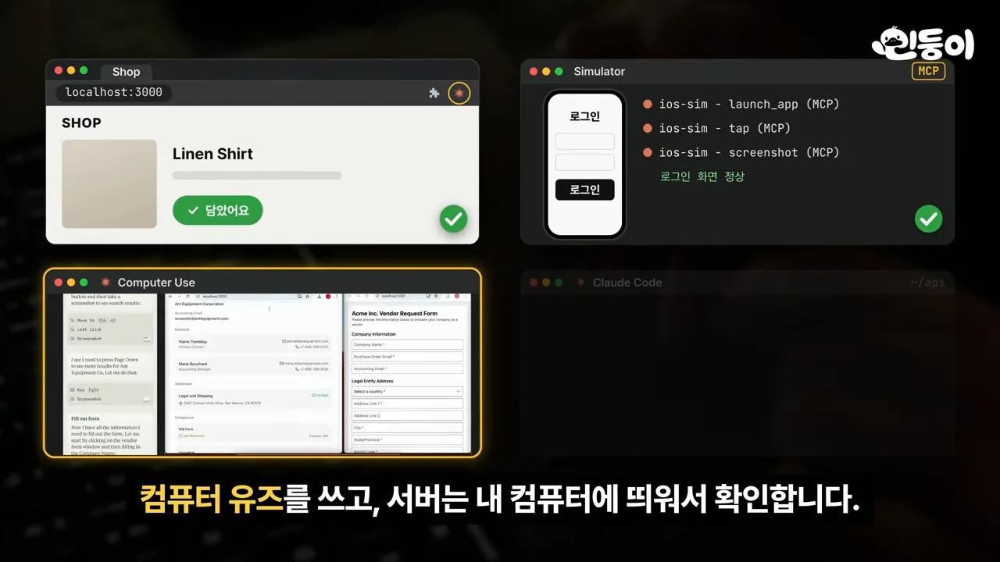
verify 스킬을 프로젝트에 맞게
Claude Code에는 이미 verify라는 기본 스킬이 있어요. 수정한 코드를 실제로 실행해 보고 제대로 작동하는지 확인하는 기능이에요. 문제는 프로젝트마다 앱을 실행하는 방법도, 확인할 기능도 다르다는 거예요. 아래 세 칸이 그 차이를 보여 줘요. 웹 쇼핑몰은 npm run dev로 띄워 장바구니 담기와 결제를, iOS 앱은 npx expo run:ios로 띄워 로그인 오류 문구를, 서버는 go run ./cmd/api로 띄워 주문 API(Application Programming Interface) 응답을 확인해요.
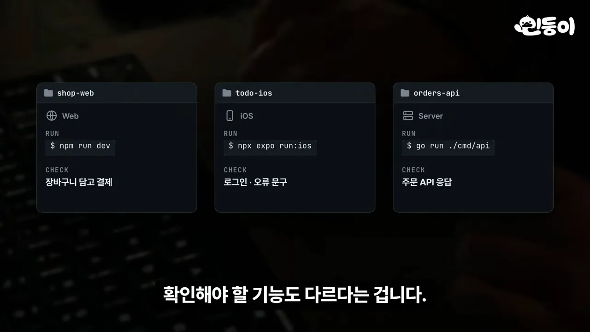
그래서 팀은 verify 스킬을 프로젝트마다 맞게 만들라고 권해요. 예를 들어 로그인 기능을 고쳤다면 맞는 비밀번호로 로그인되는지, 틀린 비밀번호를 넣으면 오류가 뜨는지까지 확인하게 하는 거예요. 화면 오른쪽 노란 상자의 체크 두 개가 바로 그 두 가지예요.
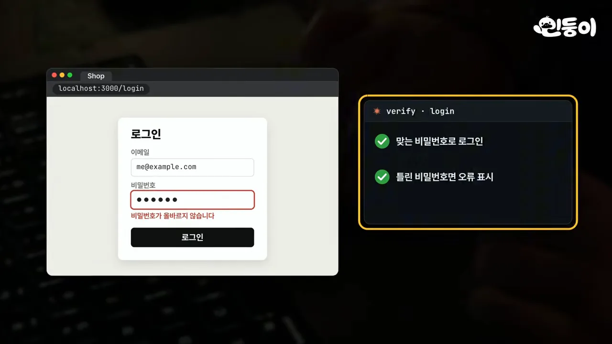
만드는 법도 어렵지 않아요. Claude Code에서 /verify를 실행하면 Claude가 프로젝트를 분석해 앱을 띄우고 검증해요. 아래 화면에서 Claude는 package.json과 로그인 페이지 파일을 읽고, npm run dev로 서버를 띄운 뒤, Playwright 테스트를 돌려 PASS를 받고 '검증 완료'를 남겨요. 오른쪽 아이콘 셋은 분석, 실행, 확인 단계를 표시해요. 성공한 실행 절차는 verify 스킬 파일에 기록해 다음 작업부터 다시 써요.
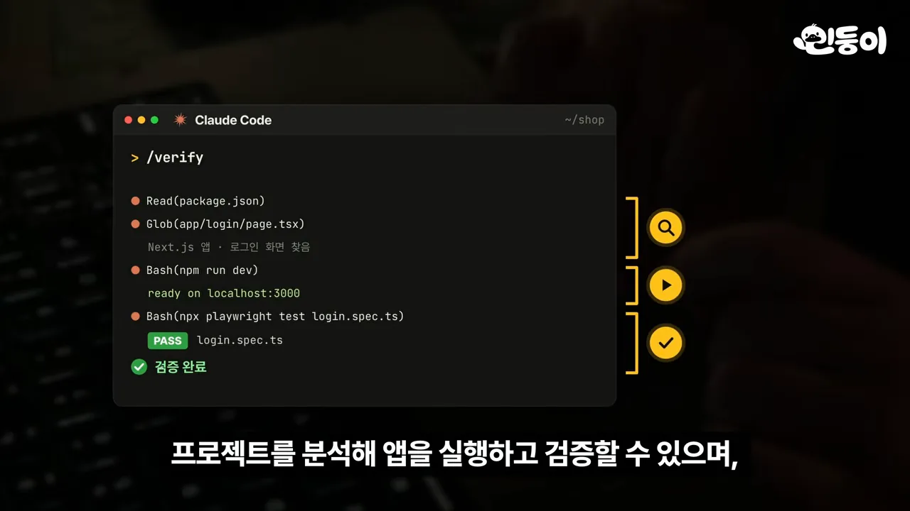
여기서 끝은 아니에요. 팀은 verify가 빠르고 안정적으로 돌 때까지 계속 다듬고, 일부러 여러 상황에서 시험해 본다고 해요. Anthropic에서는 거의 모든 변경을 이런 방식으로 확인한다고 해요.
어떤 테스트를 갖출까요?
검증 방법을 정했다면 어떤 테스트를 갖출지 정해야 해요. 팀은 세 가지를 꼽아요.
1. E2E 테스트
한 종류만 고르라면 이걸 추천한다고 해요. 사용자의 실제 이용 과정을 처음부터 끝까지 검사하는 방식이에요. 아래 화면처럼 장바구니에 Linen Shirt를 담고, 결제 화면을 지나, 체크 표시가 뜬 '주문 완료' 화면까지 가는 흐름 전체를 하나의 테스트로 봐요.
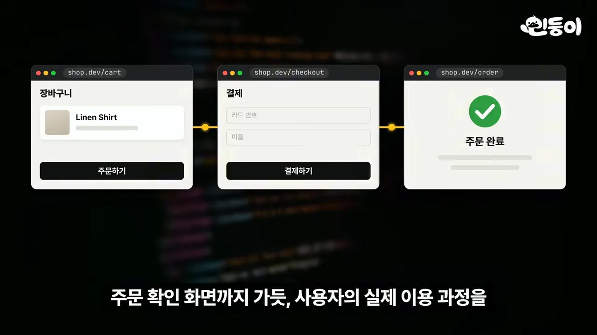
코드 조각을 검사하는 단위 테스트는 모두 통과해도, 기능을 이어 붙이면 문제가 생길 수 있어요. E2E 테스트는 실제 사용 흐름을 따라가기 때문에 이런 문제를 잡기 유리해요.
2. 속성 기반 테스트
일반적인 테스트가 예상한 상황을 확인한다면, 이 방식은 예상하지 못한 오류를 찾는 데 집중해요. 아래 코드에서 위쪽 example-based 테스트는 SALE50 쿠폰 하나만 넣어 봐요. 아래쪽 property-based 테스트는 아무 문자열이나 쿠폰 코드로 넣어도 합계가 0 이상이어야 한다는 조건만 적어요. 그러면 도구가 입력을 잔뜩 만들어 그 조건을 깨 보려 해요.
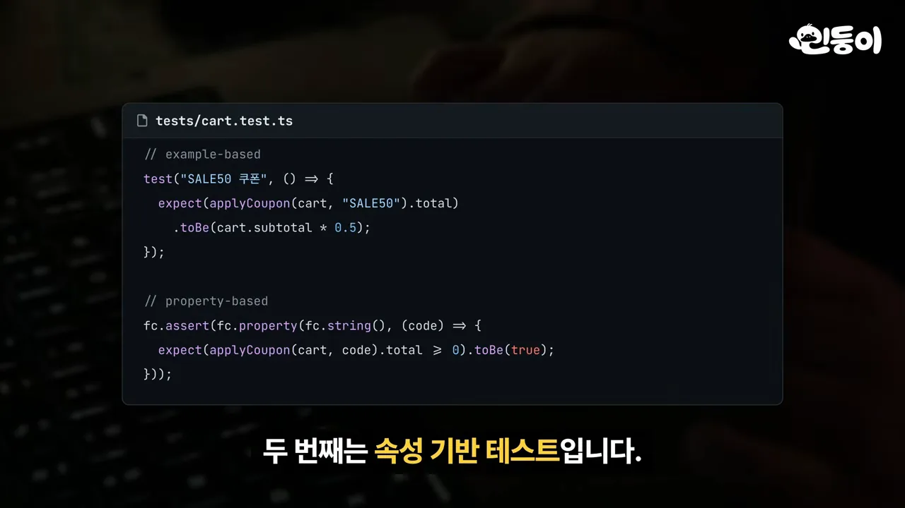
영상의 예는 '계좌 잔액은 음수가 되면 안 된다'예요. 이 조건을 정해 두면 테스트 도구가 입력을 수천 개 만들어 조건을 깨뜨릴 수 있는지 확인해요. 덕분에 코드를 쓴 Claude가 미처 생각하지 못한 예외 상황까지 검사할 수 있어요.
3. 차등 테스트
마지막은 기존 시스템과 새 시스템에 같은 입력을 넣고 결과를 비교하는 방식이에요. 아래 화면에서는 같은 입력(장바구니와 SALE50 쿠폰)이 checkout-v1 (legacy)과 checkout-v2 (new) 두 창으로 함께 들어가요. 두 결과가 다르면 어딘가 기능이 바뀐 거예요.
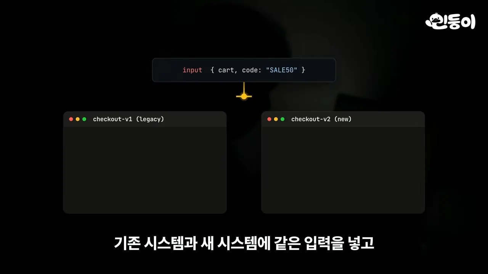
기존 코드를 다른 언어로 옮기거나 시스템을 새로 만들 때, 의도하지 않은 기능 변경이 생겼는지 확인하는 데 특히 쓸모 있다고 해요.
| 테스트 | 무엇을 하나요 | 잘 잡는 것 |
|---|---|---|
| E2E 테스트 | 실제 이용 흐름을 처음부터 끝까지 따라가요 | 조각은 멀쩡한데 이어 붙이면 깨지는 문제 |
| 속성 기반 테스트 | 지켜야 할 조건을 정하고 입력 수천 개로 깨 봐요 | 코드를 쓴 쪽이 생각 못 한 예외 |
| 차등 테스트 | 옛 시스템과 새 시스템에 같은 입력을 넣어 비교해요 | 옮기거나 다시 만들 때 생긴 의도치 않은 변경 |
불안정한 테스트는 오히려 해로워요
테스트가 많다고 무조건 좋은 건 아니에요. 실행할 때마다 결과가 달라지는 불안정한 테스트를 두면, Claude는 버그를 고치는 대신 통과할 때까지 다시 돌리는 버릇을 들여요. 그래서 팀은 무작정 재실행하는 걸 막아요. 아래 화면에서 '또 실패했네, 통과할 때까지 다시 돌려 줘'라는 요청에 --retries=5를 붙인 명령이 PreToolUse 훅에 막혀요(blocked: rerun without a cause). Claude는 대신 테스트 파일을 읽고 원인을 찾으러 가요.
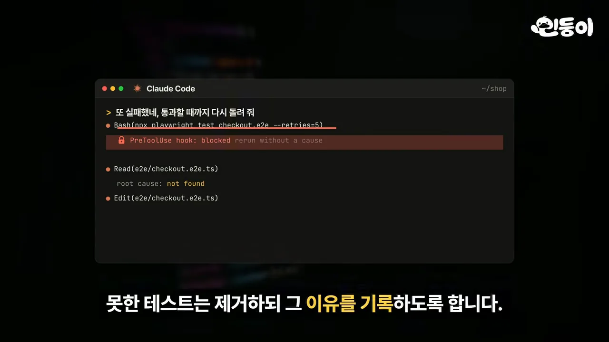
원인을 끝내 찾지 못한 테스트는 지우되, 그 이유를 기록하게 해요. 그래야 테스트가 말없이 사라지지 않고 나중에라도 왜 뺐는지 확인할 수 있어요.
검사를 빠뜨리지 않게: 훅, /goal, 커밋 게이트
테스트를 갖춰도 Claude가 실행하지 않으면 소용없어요. 그래서 팀은 검사를 빠뜨리지 않도록 자동화해 뒀어요.
PR 전에 싼 검사부터
팀은 사람의 리뷰 시간과 검사 비용을 줄이려고, Claude가 스스로 잡을 수 있는 오류는 미리 잡게 해요. 그래서 Claude는 PR(Pull Request), 그러니까 코드를 합쳐 달라는 요청을 올리기 전에 테스트와 린터부터 돌려요. 아래 화면 오른쪽 'Open a pull request' 창에 ci / test, ci / build, ci / lint 세 칸이 아직 돌기 전 상태로 보여요. 왼쪽에서 Claude가 먼저 npm test를 돌리고 있어요.
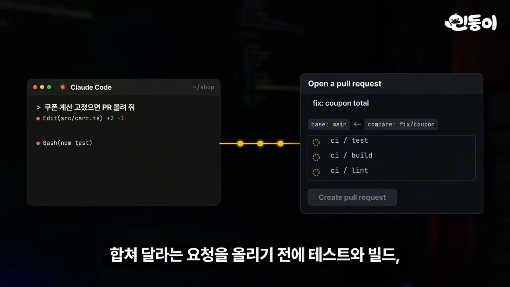
이것도 매번 말로 시킬 필요가 없어요. Claude가 작업을 마칠 때마다 테스트가 저절로 돌도록 훅을 걸어 두거나, /goal로 '테스트 전부 통과'를 목표로 정해 두면 돼요.
세 번 실패하면 사람에게
실패했을 때의 원칙도 정해 뒀어요. 같은 문제에 시간과 토큰을 계속 낭비하지 않도록, Claude가 직접 고치고 다시 검사하되 세 차례 다시 해도 통과하지 못하면 멈추고 사람에게 넘겨요. 아래 화면에서 쿠폰 테스트가 같은 TypeError로 FAIL, 수정, 다시 FAIL을 세 번 되풀이하는 게 보여요.
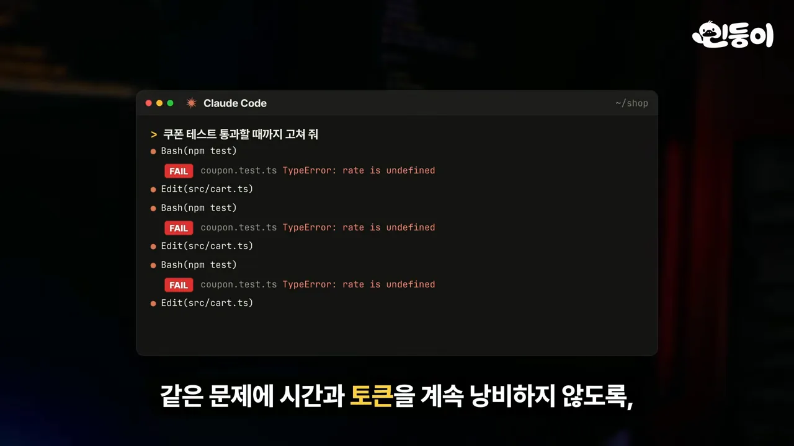
사람은 이렇게 걸러진 실패한 검사를 보고 직접 살펴볼 문제를 고르면 돼요. 아래 검사 목록에서 대부분은 초록 체크로 통과했고, 빨간 X 두 줄(test / e2e checkout, test / property balance)만 사람이 볼 대상이에요.
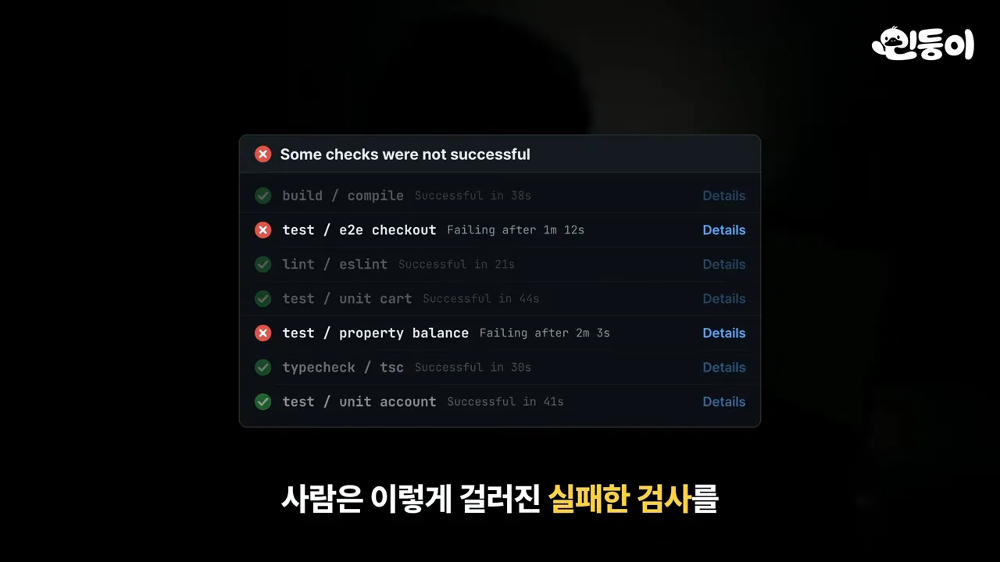
검증 안 한 커밋을 막는 게이트
그런데 검사를 자동화해도 Claude가 검증을 건너뛰고 코드를 커밋할 수 있어요. 검증되지 않은 코드가 다음 단계로 넘어가면 불필요한 리뷰와 재작업이 늘어나요. 그래서 커밋 단계에 별도의 장치를 마련했어요.
먼저 커밋마다 어떤 검증을 거쳤는지 적게 해요. 아래 git log 화면에서 커밋마다 'Verified:' 줄에 npm test, /verify, /code-review 같은 검증 이름이 붙어 있어요. 검증하지 않았다면 '없음'이라고 남겨서, 검증 없이 들어간 변경을 나중에 바로 골라볼 수 있게 해요.
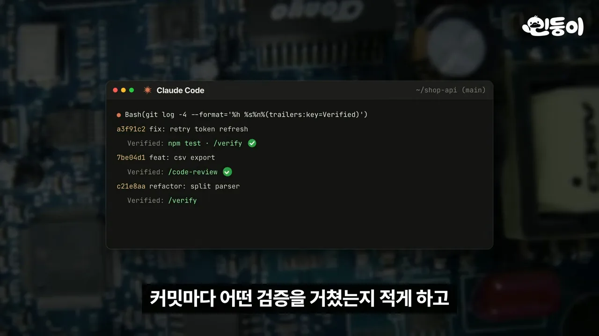
한 발 더 나아가, 작업 중 /code-review나 /verify를 실행하지 않았다면 커밋 자체를 막는 게이트도 만들었어요. Claude Code의 기능이 아니라 이 팀이 직접 만든 장치예요. 영상도 이 점을 짚으려고 /commit-gate를 입력하면 'Unknown command'가 뜨는 화면을 보여 줘요.
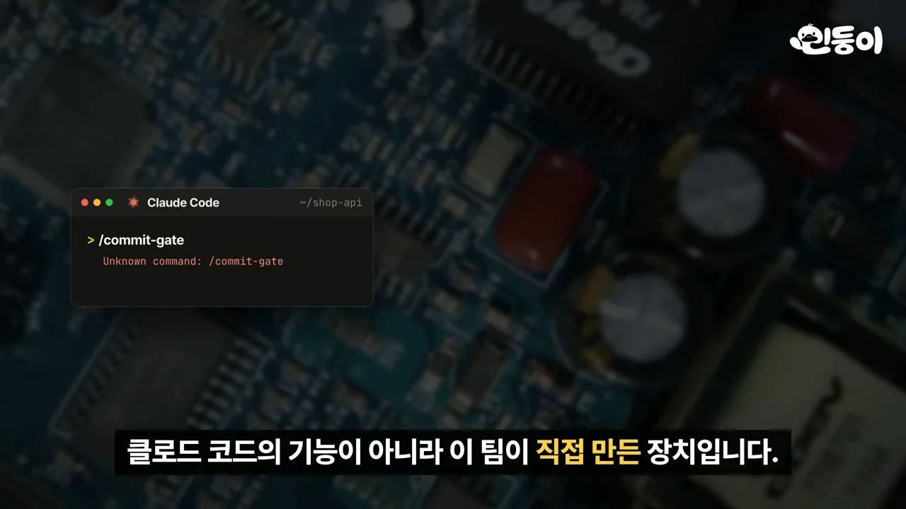
이 게이트는 세 가지 모드로 운영해요. 아래 화면 오른쪽에 off(disabled), observe(log only), enforce(block)가 차례로 있어요. 왼쪽 .claude/settings.json의 commitGate 설정은 영상이 모드 전환을 보여 주려고 그린 예시예요. 게이트가 팀 자체 장치인 만큼 Claude Code가 알아듣는 설정 키는 아니에요.
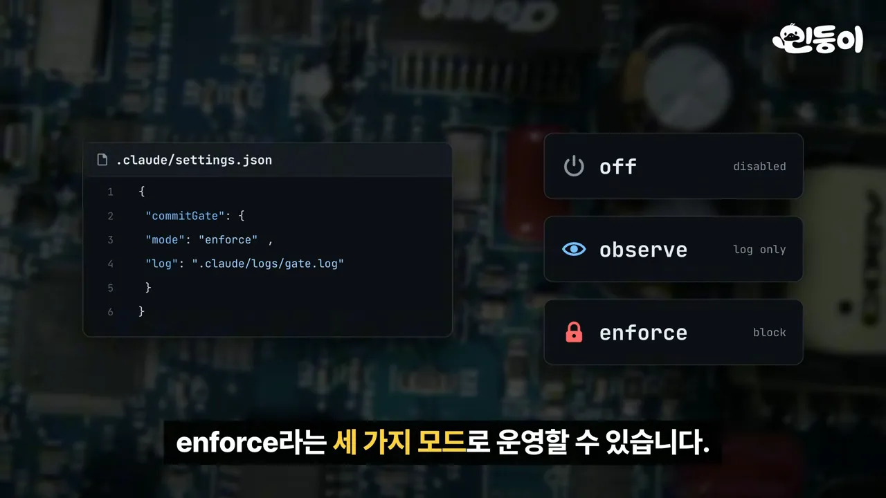
| 모드 | 하는 일 | 언제 쓰나요 |
|---|---|---|
| off | 차단 기능을 꺼요 | 게이트를 쓰지 않을 때 |
| observe | 커밋을 막지 않고, 어떤 작업이 규칙에 걸리는지만 기록해요 | 새 게이트를 처음 들일 때. 정상 작업을 잘못 막는지 먼저 봐요 |
| enforce | 규칙을 어기면 실제로 커밋을 막아요 | observe로 확인한 뒤 |
차단한 뒤에도 탈출구가 있어요. 한 세션에서 두 번 막히면 다음 커밋은 통과시켜요. 아래 화면에서 커밋이 BLOCKED (1/2), BLOCKED (2/2)로 두 번 막힌 뒤 세 번째는 'ALLOWED passed after 2 blocks'로 들어가요. 검증을 강제하면서도 Claude가 같은 제약에 갇혀 작업을 못 하는 상황까지 고려한 설계예요.
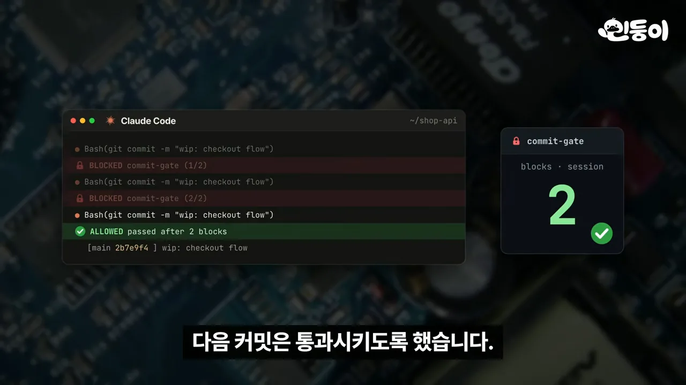
검사하는 쪽도 검사해요
검사를 촘촘하게 세워도, 정작 검사하는 AI가 버그를 놓칠 수 있어요. 그래서 이 팀은 리뷰어까지 따로 검사해요.
채점 기준은 바뀌지 않는 곳에
먼저 채점 기준부터 지켜요. 시험 보는 사람이 채점 기준까지 고칠 수 있다면 안 되겠죠. 팀은 리뷰어가 무엇을 눈여겨봐야 하는지 REVIEW.md 파일에 적어 둬요. 그리고 검사받는 코드가 자기에게 유리하게 기준을 바꾸지 못하도록, 코드 리뷰는 이 파일을 변경된 쪽이 아니라 변경 전 원래 브랜치에서 읽어요. 아래 화면에서 code-review가 연결된 REVIEW.md의 브랜치 표시가 main인 게 그 뜻이에요.
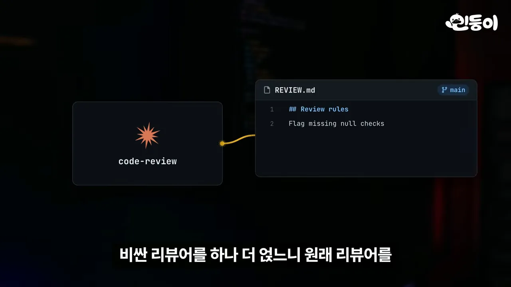
리뷰어를 과거 버그로 채점하기
리뷰어가 실제로 버그를 얼마나 잘 찾아내는지도 평가해요. 과거에 문제가 생겨 되돌린 코드를 리뷰하던 당시 상태로 되살려 놓고, AI 리뷰어에게 다시 검사하게 해요. 아래 화면에서 리뷰어가 42번째 줄에 '캐시가 인증 확인보다 먼저 반환돼서 인증 안 된 사용자도 캐시 데이터를 읽는다'고 짚었어요. 오른쪽 answer-key.txt의 정답(cache hit skips the auth check)과 맞아서 SCORED가 붙어요.
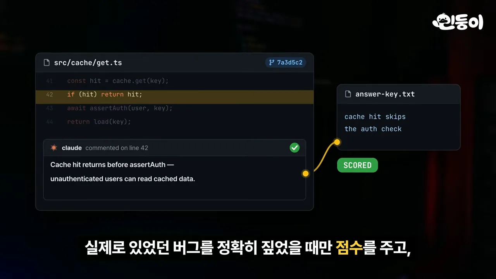
문제가 없었던 코드도 함께 검사해서, 멀쩡한 부분을 오류로 지적하는 거짓 양성을 내지 않는지도 봐요. 아래는 Merged·stable 표시가 붙은 멀쩡한 retry 코드에 리뷰어가 'Off-by-one: 반복이 한 번 더 돈다'고 지적한 경우예요. 빨간 'false positive' 표시가 붙고 코멘트에 취소선이 그어져요.
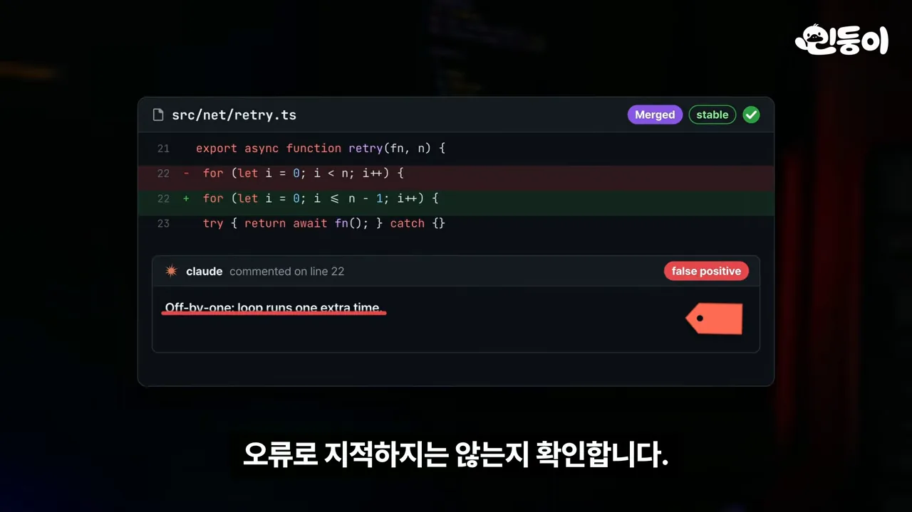
리뷰어는 늘리지 말고 다듬기
그렇다고 리뷰어를 무작정 늘리지는 않아요. 비싼 리뷰어를 하나 더 얹느니 원래 리뷰어를 다듬는 게 낫다고 봐요. 대신 앞선 리뷰와 지난 실패에서 나온 내용을 다음 리뷰에 넘겨 매번 처음부터 보지 않게 해요. 아래 화면에서 2라운드 리뷰는 1라운드 발견(cache auth bypass, unbounded retry)과 지난번 놓친 것(session reuse, stale token)을 읽어 들이고, 1라운드 이후 바뀐 부분만 다시 봐요.
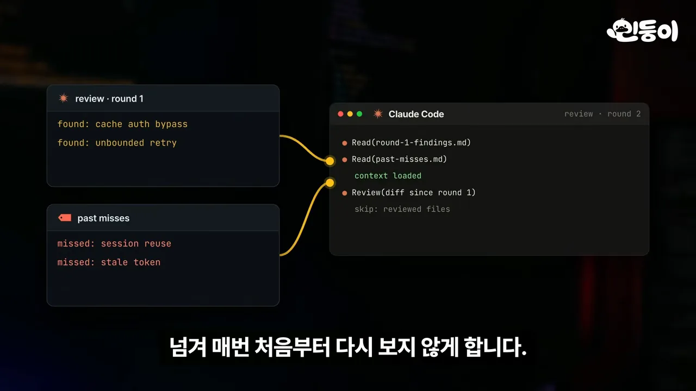
그 편이 비용도 덜 들고 찾아내는 것도 더 많다고 해요.
놓친 버그는 규칙으로, 사람은 증거를 봐요
그래도 빠져나간 버그가 있으면, 이 팀은 다음엔 잡을 수 있도록 규칙으로 남겨요. Claude가 같은 문제를 되풀이하면 훅을 추가하거나 CLAUDE.md의 규칙을 더 분명히 적어요. 예를 들어 로그에 사용자 정보가 남지 않는지 보는 테스트에서 자꾸 실패한다면, 그 문제를 막는 훅이나 규칙을 넣는 식이에요. 이것만으로도 같은 문제는 대부분 다시 생기지 않는다고 해요.
아래 화면은 리뷰가 놓친 버그를 리뷰 기준으로 옮기는 모습이에요. 왼쪽 session.ts의 89번째 줄 reuse(session)에 빨간 'missed' 표시가 붙었고, 오른쪽 main 브랜치의 REVIEW.md 4번째 줄에 'Flag session reuse after logout'(로그아웃 뒤 세션 재사용을 지적할 것)이 새로 추가돼요.
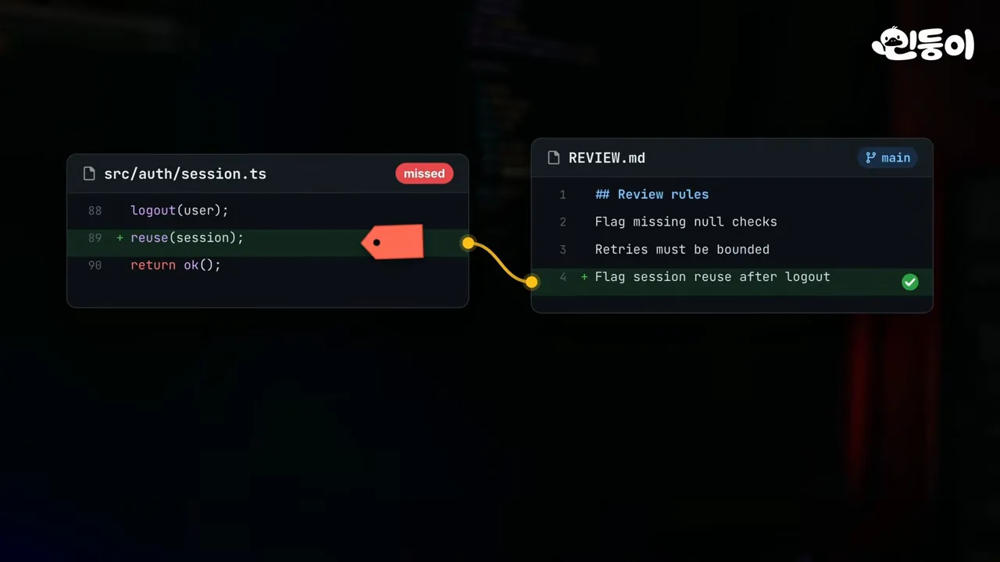
39개 항목의 신뢰성 체크리스트
팀은 과거 사고를 바탕으로 만든 39개 항목의 체크리스트를 운영해요. 각 항목에는 언제 적용할지(어떤 코드를 고쳤을 때), 무엇을 확인할지, 어떤 사고에서 나온 규칙인지가 적혀 있어요. 아래 화면의 '대화 저장 형식을 바꿀 때' 항목이 예예요. '언제' 칸은 변경이 src/session/serialize.ts를 건드릴 때, '확인할 것' 칸은 새 칸이 없는 예전 대화 기록도 여전히 불러와지는지예요. 마지막 '출처' 칸에 그 규칙이 나온 사고가 들어가요.
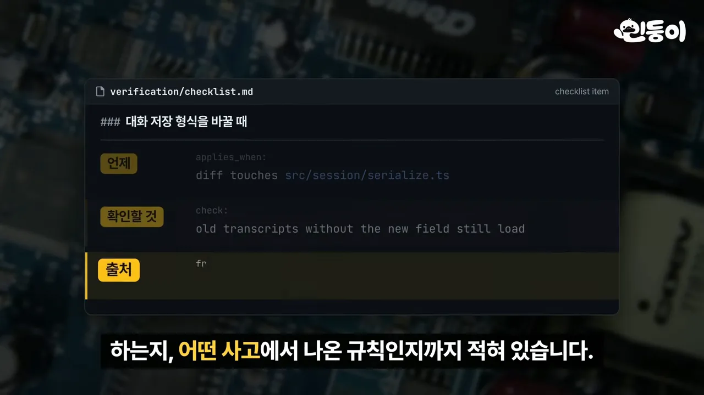
Claude는 변경된 코드를 보고 관련 있는 항목만, 보통 3개에서 10개를 골라 검사한다고 해요. 아래 화면 왼쪽은 serialize.ts에서 저장 형식에 버전(v: 2)과 history 칸을 더한 변경이고, 오른쪽은 39 items짜리 체크리스트 전체예요. 이 변경이라면 serialize-compat, transcript-load 같은 항목이 걸려요.
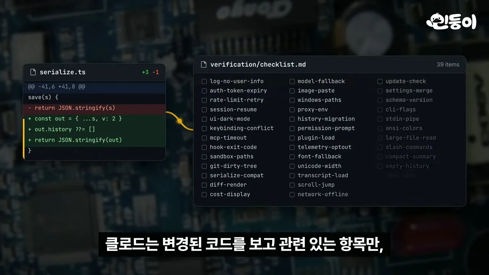
새 규칙은 까다롭게, 낡은 규칙은 정리
새 규칙을 들이는 기준도 까다로워요. 리뷰나 되돌림 PR에서 같은 문제가 적어도 두 번 나와야 하고, 코드 변경 내용만 보고도 그 규칙에 걸리는지 판단할 수 있어야 해요. 그다음 AI 에이전트 셋이 그 규칙을 반박해 보고, 마지막에 사람이 승인해야 적용돼요. 아래 화면에서 agent 1~3이 각각 다른 반론(테스트 데이터가 가짜 이메일을 쓰지 않나, 해시된 ID(Identifier)는 괜찮지 않나, 오탐은 없나)을 확인하고, 오른쪽에서 @lead가 Approved를 눌러요.
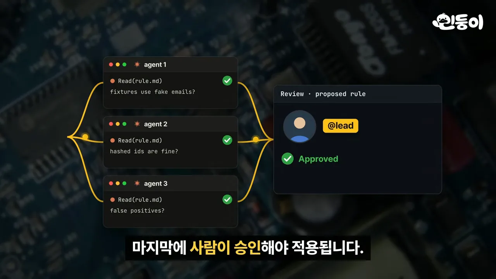
또 검증 체계가 지나치게 복잡해지지 않도록, 규칙은 추가하는 데서 끝내지 않고 불필요하거나 중복된 항목을 정기적으로 정리해요. 아래 체크리스트에서 legacy-ie-polyfill 줄에 빨간 'unused' 표시가 붙어 있어요. 아래 초록 줄들은 새로 들어온 항목이에요.
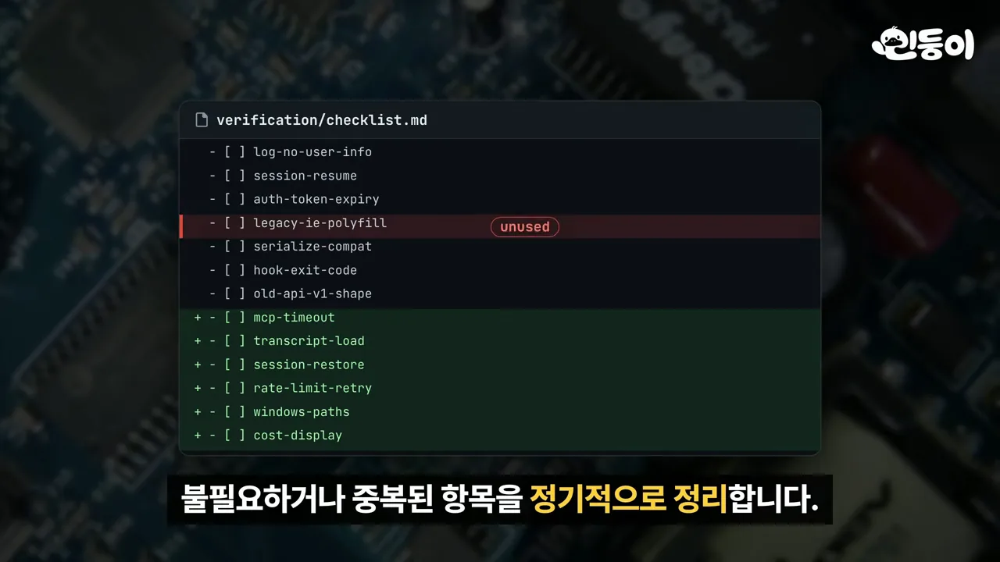
사람의 일은 읽기에서 증거 보기로
결국 이 장치들은 사람이 하는 일까지 바꿔 놓았어요. 모든 코드 변경을 일일이 읽는 대신, 무엇이 '다 된' 상태인지 기준을 정하고 AI가 내놓은 검증 결과를 확인하는 쪽으로 옮겨 갔어요. 아래 화면 왼쪽 DONE.md의 'Definition of done'에 쿠폰을 넣으면 합계가 줄어든다, 잔액은 0 이상, 기존 테스트 통과 세 줄이 있어요. 오른쪽에서 Claude가 npm run verify를 돌려 PASS를 보여 줘요.
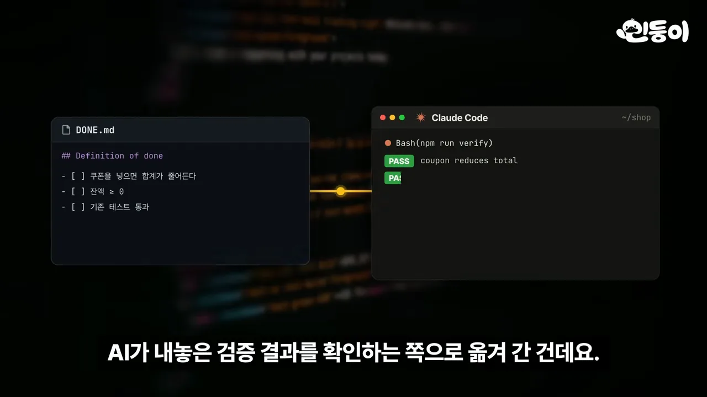
그래서 수많은 Claude에게 동시에 일을 맡기면서도 품질을 지킬 수 있다고 해요. 영상은 검증 방법과 통과 기준, 실패했을 때의 대응까지 하나의 흐름으로 묶어 두면 AI에게 더 많은 일을 안심하고 맡길 수 있다고 정리해요. 아래 화면이 그 흐름이에요. verify/SKILL.md의 실행 절차, PR #4131의 checks, verify가 실패했을 때 할 일을 적은 CLAUDE.md가 하나의 고리로 이어져 있어요. CLAUDE.md 마지막 줄에는 '체크리스트에 추가하기'가 새로 들어가요.
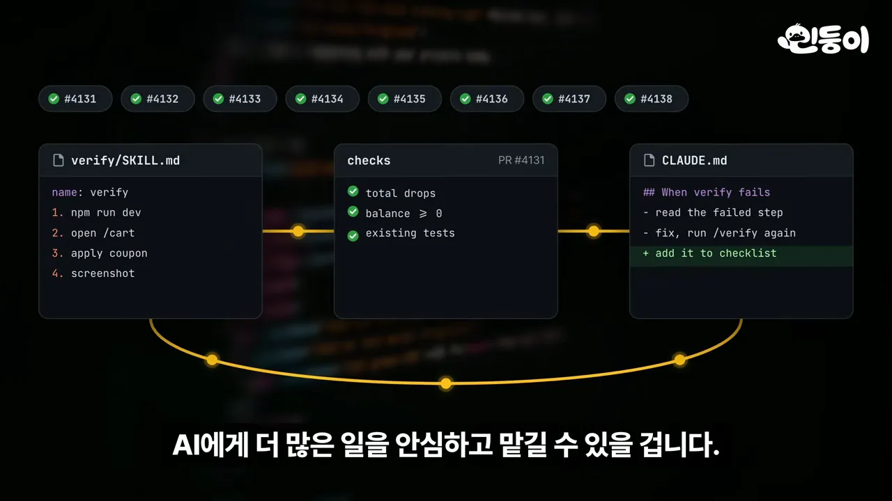
영상에 나온 장치를 한 장에 모으면 이렇게 돼요.
하나만 해 본다면, 자주 시키는 확인 절차를 verify 스킬로 만드는 것부터 하라고 추천해요. 영상 끝 화면에는 고정 댓글에 올린 검증 요청 한마디가 이렇게 보여요.
직접 실행해 보고, 통과한 증거까지 보여 줘
— 영상 08:51